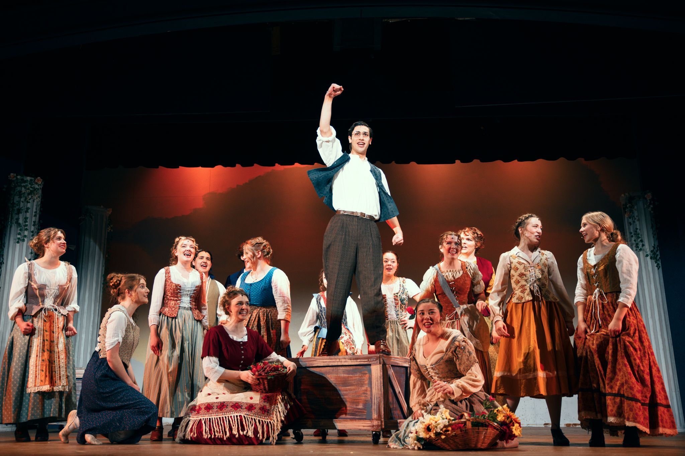

See the whole.
Explore the technical, collaborative, and creative pieces of the process—not only one role.
05 / The teaching practice
Creative work gets better when everyone knows a little more about how it gets made.

Theatre & music education
The philosophy
My outlook on education (especially artistic education) and how teaching should be done stems a lot from my own personal experience in the educational space both as a student and a teacher in many capacities. Throughout my education I've delved as deep as I can into as many different areas as possible. As someone involved in Theatre, I've primarily been an Actor in theatre spaces, but I've also been a Director, Stage Crew, Lighting Designer, Lighting Operator, Set Designer, Set Constructor, and Technical Director, and overall that has shaped my ability to perform in theatrical settings to an exponential degree, rather than if I stayed down the routes of acting or lighting. So, you can probably guess that I place a lot of value on exposing my students to as many different aspects of what they're learning about, whether it be theatre or music, as possible. It's extremely difficult to understand without confusion what's happening in a production process, whether that production process is a theatre show or a choir concert, if one doesn't also, at least to a base-level degree, understand what's happening in every level of that production. Your actors might not break their microphones if they understand the workings of them and how to handle them, for example. Beyond my desire for students to dip their toes into as many things as possible, I also understand, as a student during the COVID pandemic myself, the utter importance of personal face-to-face and human connection. So not only is in-person instruction invaluable to me, but also the interpersonal connection between teacher and student, as well as between students, is almost more invaluable to me. If my students can't connect with me, then how are they supposed to learn from me? And to the opposite end, if I don't truly know or value my students individually, how am I ever going to know how to suit that student's individual needs, or most efficiently teach them? That connection helps propel student success, as well as student enjoyment in the activities they're pursuing. Additionally, I harbor strong belief in the cooperation of students in classwork, productions, and rehearsals. Human connection is the key to unlocking one's full artistic potential, and without communication, audiences, peers, and critics, artistic expression ultimately fails to truly grow and evolve. On the fortunate contrary, if the correct environment is harbored for growth, communication, and resolutions, then that propels the experience of education forward into greater and greater success.
Explore the technical, collaborative, and creative pieces of the process—not only one role.
Personal connection turns instruction into a relationship and helps every student find their own way in.
Communication, cooperation, and shared ownership are how an ensemble becomes a community.
“Human connection is the key to unlocking one's full artistic potential.”